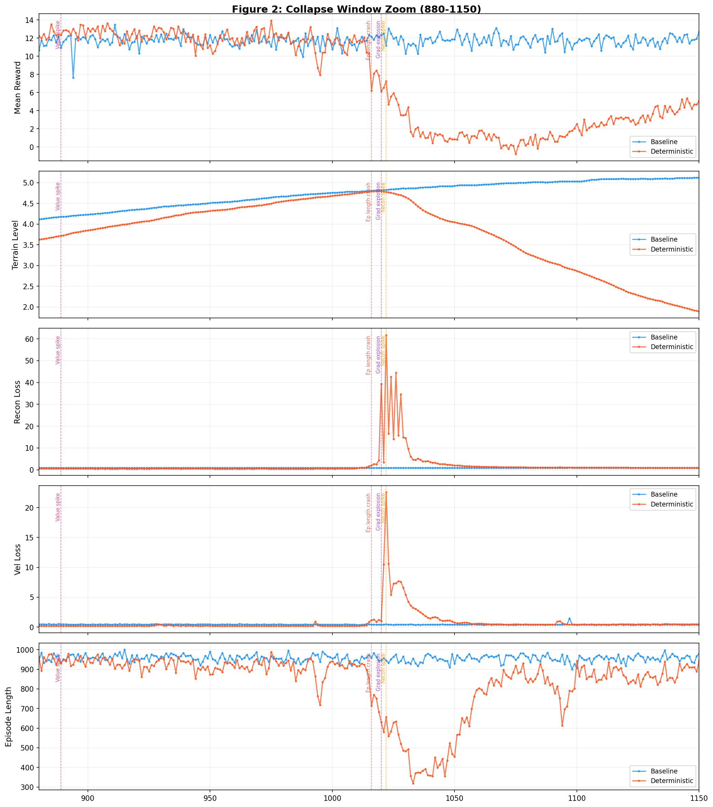

DreamWaQ (ICRA 2023) was reproduced end to end, followed by an investigation into what the beta-VAE terrain encoder (CENet) actually learns. The honest bottom line: in the configuration and checkpoint studied, the sampled latent is almost inert. The downstream policy runs almost fully on the deterministic mean.
The DreamWaQ System
DreamWaQ replaces the explicitly trained adaptation head of RMA (Rapid Motor Adaptation, RSS 2021) with a beta-VAE that has no observer. Given the last five steps of the robot's own history (positions, velocities, contacts, commands), the encoder maps them through 16 Gaussian latents to a small context vector. The decoder predicts the next body-frame velocities and height samples. Like RMA, the actor is conditioned on the latent.
The design intent is implicit terrain imagination: the latent should summarize what the feet have touched, and that summary should guide the actor on hard terrain. The central question was whether the latent space actually carries that summary, and whether the sampling step matters to the resulting actions at all.
Investigation Steps
- Reproduced the full system (Isaac Gym, Unitree Go2) on the community implementation
curieuxjy/go2_dreamwaq. - Added a deterministic variant of CENet (flat 16-wide encoder head, KL term forced to zero) plus faithful and beta-zero stochastic tasks, and two curriculum-speed tasks for controlled experiments.
- Audited the implementation against the paper line by line.
- Ran a posterior-collapse audit, latent interventions on a frozen actor, a causal analysis of the CENet, and a full representation (probing) study.
- Ran controlled stability experiments across three curriculum conditions and five seeds.
The archived repository, all data, the raw analysis scripts, and the full documentation live in the DreamWaQ repository linked at the end of this page. The single source of truth for the numbers below is docs/DREAMWAQ_FACTS.md.
First, the Reproduction
A faithful stochastic run at 1500 iterations trained cleanly. Markers at the start and end of that run:
| Quantity | Start | End |
|---|---|---|
| Reward | 1.84 | 13.59 |
| Terrain level | 0 | 6.22 |
| CENet reconstruction loss | 0.4716 | 1.0052 |
| CENet velocity loss | 0.1841 | 0.2411 |
| Weighted KL | 0.094 | 0.060 |
That last line deserves attention: the KL term is small and barely moves. This is the first hint that something is off with the latent itself, and it is the thread that this whole project pulls on.
The Posterior Collapse Evidence
At the iteration-500 checkpoint of the stochastic baseline (256,000 samples), a full audit found textbook posterior collapse:
- KL stays near zero. Mean 0.037 nats, median 0.024, and 18% of samples sit below 0.01.
- Zero of sixteen latent dimensions are active. The activity criterion (per-dimension signal over noise) marks all dimensions inactive.
- The posterior matches the prior. Mean sigma is 0.9996 (std 0.030), which is the prior for a standard Gaussian.
- Mutual information with terrain collapses. MI between the posterior mean and the terrain type is 0.0148 nats against a terrain entropy of 2.996 nats, about 0.5%.
- Sampling does not help reconstruction. Mean reconstruction error with the sampled latent is 0.7711, essentially the same as the 0.7611 obtained by feeding a constant zero, a difference of about 1.4%.

Posterior means over 256,000 samples. The distribution is concentrated near zero, which matches a prior-like collapse. Source: stage1/audit_posterior_collapse.py on the reproduction checkpoint.

Per-dimension KL for the sixteen latent dimensions. All stay near the prior, so no dimension carries information.
This is the standard diagnosis of posterior collapse. It matters here because the whole point of DreamWaQ's CENet is to generate terrain features implicitly from the latent. If the latent does not carry terrain information, the mechanism the paper describes cannot be operating in this reproduction.
The Causal Story: Why Reconstruction Loss Climbs 113%
The reproduction run also showed something striking. The CENet reconstruction loss grows by 113% (0.4716 to 1.0052) over 1500 iterations, even as the robot gets better at locomotion. A causal analysis was run on the scalars of the stochastic run to find out what drives that rise.
| Quantity | Value |
|---|---|
| Reconstruction loss vs terrain level correlation | r = 0.949 |
| Reconstruction loss vs reward correlation | r = 0.255 |
| Reconstruction loss vs velocity loss correlation | r = -0.327 |
| Decoder.0 and decoder.6 weight updates after iteration 200 | exactly 0 |
| Gradient attenuation through the 4-layer decoder | about 1/625 |
The interpretation that survives scrutiny: the outer decoder layers freeze early (their weight updates become exactly zero after roughly iteration 200), while the curriculum keeps pushing the robot onto harder terrain. The terrain gets harder, the decoder no longer adapts, and reconstruction loss rises in lockstep with terrain level. The correlation with terrain (r = 0.949) is far stronger than with reward or velocity loss.

Reward, terrain level, and CENet reconstruction loss over the 1500-iteration stochastic run. Source: forensic_report.py on the TensorBoard scalars of the run.
Important caveat: this is descriptive correlation, not a proven causal mechanism. The decoder layers freeze, the terrain gets harder, and the losses move together. I could not cleanly separate freeze timing from difficulty growth. I state the mechanism as the most consistent explanation, not as an established law.
Latent Interventions on the Frozen Actor
Intervening on a checkpoint is the cleanest way to ask how much the actor depends on the latent. On 255,488 samples from 512 environments across 20 terrains, with a frozen actor and CENet, the mean action change produced by each perturbation was measured:
| Intervention | Mean action change (rad) |
|---|---|
| Clamp z to zero | 0.0679 |
| Feed mu instead of the sampled z | 0.0678 |
| Remove CENet entirely (zero context) | 0.1964 |
| Swap z between same-terrain pairs | 0.0926 |
| Cross-terrain shuffle of z | 0.0943 |
| Action Jacobian with respect to z | 0.013 |
Three readings. First, sampling does not matter: clamping z to zero (0.0679 rad) and replacing z with mu (0.0678 rad) are almost identical, which is expected once the posterior is collapsed. Second, the z channel has a real but small effect on actions: 0.068 rad against a mean action magnitude of 1.77 rad is about 3.8%, and the Jacobian term is the smallest of the three inputs by far (obs 0.113, vel 0.079, z 0.013). Third, cross-terrain shuffling changes actions no more than same-terrain swapping (0.0943 vs 0.0926), which directly suggests z does not encode a terrain-specific signal.
A parallel in-simulation comparison (eval_mu_vs_z.py) confirmed the same pattern: no measurable difference in tracking error or fall rates between the z-conditioned and mu-conditioned policies.
Representation Analysis: What the Latent Mean and Latent Sigma Encode
The probing study (linear, MLP, and random-forest probes; balanced accuracy and R-squared; with permutation baselines and environment-wise cross-validation) asks directly what the latent mean and the latent sigma can be read as.
| Target | From latent mu | Chance |
|---|---|---|
| Foot contact (left hind) | 0.738 | 0.50 |
| Estimated velocity x | 0.686 | 0.50 |
| Command x | 0.628 | 0.50 |
| Terrain type (in-domain) | 0.1101 | 0.0498 |
| Terrain type (env-wise CV) | 0.0712 | 0.0528 |
| Terrain type (from sampled z) | at chance | 0.0651 |
The latent mean encodes locomotion telemetry (foot contact, estimated velocity, command), and it does not encode terrain identity beyond a whisper. The in-domain terrain probe reads 0.1101, barely above its chance level of 0.0498, and most of that reading collapses under environment-wise cross-validation (0.0712 vs 0.0528 chance). The sampled z reads terrain at pure chance.
The parallel measures agree: the sampled latent retains zero information across all targets (retention 0%), a temporal probe of z sequences finds no more structure than single frames (segment R-squared 0.0142), and z is at chance even in collision-adjacent rare events. Notably, the latent sigma, which is private to CENet and invisible to the policy, actually encodes more than mu. Its probe reads estimated velocity at 0.6272, command at 0.5726, and action norm at 0.4993, while the terrain type stays at 0.0407 (chance). The information that survives lives in the part of the latent the policy cannot see.
Sensitivity analysis adds the last quantitative piece: replacing mu with a zero vector moves policy outputs by a KL of 2.7e-05, perturbing z by 0.1 sigma moves them by 9.3e-03, and replacing z with standard normal noise moves them by 1.85e-02. The policy output depends on mu about as much as on any z. With an effective signal-to-noise ratio of about 0.003, the sampled channel is functionally a constant.
The Observed Collapse and Its Limits
The deterministic variant (flat encoder head, no KL) produced one genuine collapse across all runs: a long run that fell apart near iteration 1020 at a terrain level around 4.5. That event is the subject of the forensic figures below.

Zoom around the deterministic run's failure near iteration 1020. Source: forensic_report.py on the merged TensorBoard scalars of the deterministic runs.
But the controlled statistics are the honest part of this story. In 15 controlled 500-iteration runs (three curriculum conditions, five seeds each), zero collapsed. The per-condition 95% confidence interval tops out at 52% for a single condition, and the pooled estimate for these short runs is an upper bound around 22%. A dedicated diagnostic window over 80 iterations on a healthy deterministic run remained healthy throughout.
The curriculum-speed manipulation did do something real: the three conditions changed terrain progress in opposite directions (slow -1.28 terrain levels, original +1.11, fast +3.26), all pairwise differences significant at p = 0.008. But it had no effect on collapse. So: a rare, real, reproduced-once collapse event, with no causal story and no measured trigger. I am not going to dress that up as an established finding. reports/failure.md and the forensic report describe it as the outlier it is.
Conclusions
- The sampling path is nearly invisible. The posterior collapses in this configuration, z carries 0.5% of terrain entropy, and interventions on z move actions by about 3.8%.
- Mu, not z, steers the policy. The actor's reliance on mu equals its reliance on z, and mu encodes locomotion telemetry, not terrain identity.
- Terrain imagination, as the paper describes it, does not operate here. No measured probe, intervention, or shuffle can find a terrain-specific signal in the latent. The policy effectively walks blind, which explains why a blind actor works so well.
- Reconstruction loss climbs because terrain does. Decoder layers freeze early while the curriculum advances, and the two are correlated at r = 0.949.
- The deterministic collapse is real but unexplained. One event in sixteen runs, never reproduced in controlled conditions.
The most useful result of this project is the negative one. DreamWaQ's Blind Actor reproduces and performs well, which is consistent with recent literature questioning how much of the benefit comes from the imagination mechanism versus the architecture and training choices. If the latent were carrying terrain features in this implementation, the interventions and probes should have found them. They did not.
Honest Cautions
- All probe and intervention results come from a single checkpoint (iteration 500, seed 1) of a single run. I used environment-wise cross-validation against temporal leakage, but I did not replicate the probes across multiple seeds.
- The stochastic-versus-deterministic comparison is not a pure sampling ablation, because the encoder head shape also differs.
- No real robot, one simulator, one embodiment (Unitree Go2), one reward design.
- The causal analysis is correlation-based. The freeze of the decoder layers is measured; the mechanism is my interpretation.
- This does not claim to overturn DreamWaQ. It characterizes this implementation and checkpoint. If the paper's setup differs from this community codebase, those differences are exactly where the mechanism could live.
Repository
Full archive: the modified DreamWaQ code, every analysis script, all committed data (metrics, CSVs, diagnostic pickles, figures), and the documentation set (docs/DREAMWAQ_FACTS.md, reproduction steps, provenance, image sources).